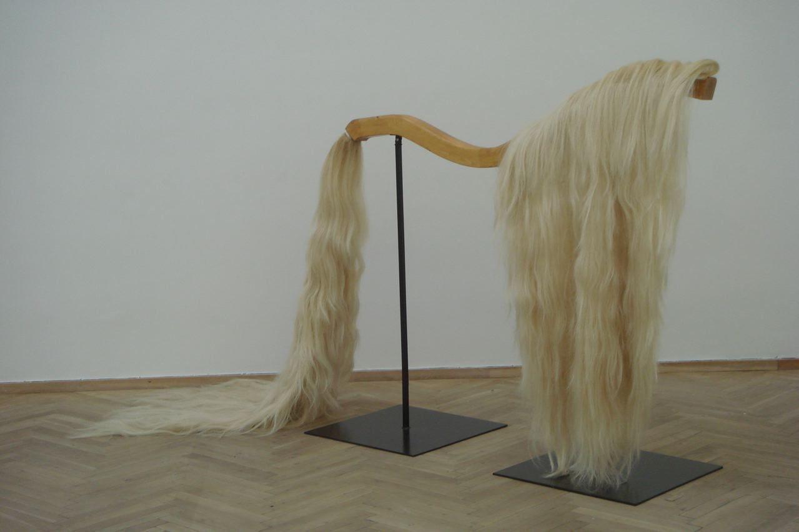

I was introduced to Rose during the summer to help her find a way of displaying two equine wigs: the mane and tail of a horse which she had used in a performance in the 70's for her retrospective in Copenhagen. After meeting her and researching equine storage and display products we decided on a wooden spine. The spine was made from laminated timber planks, with subtle hidden fixings for the wigs and small movable wooden hammer shaped dowels within the neck to help create the fall of the mane.
